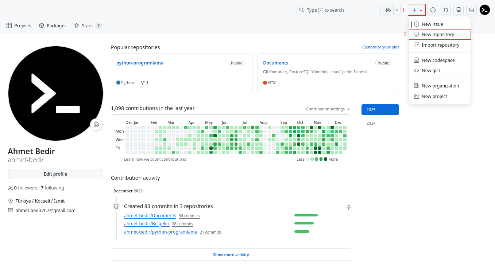
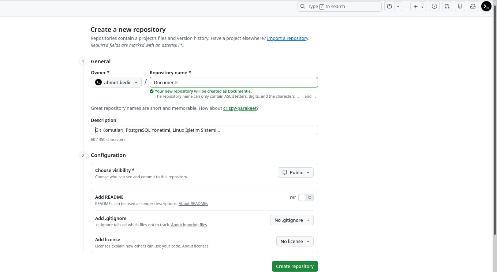
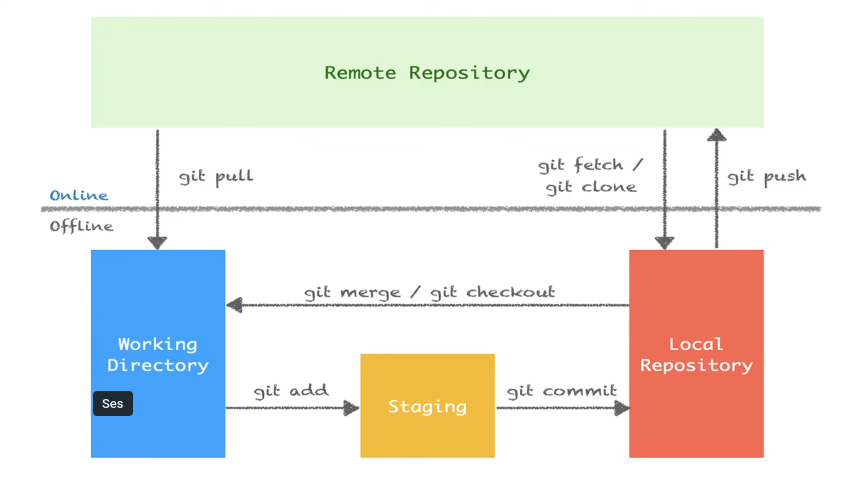

- Gitin sistemine kullanıcı adımızı ve e-mail adresimizi tanımlamak için:
git config --global user.name "user_name"
git config --global user.email "user_email"
--global anahtarı yerine
--local anahtarı yazılması veya hiç yazılmaması gerekir.
- Tanımlamış olduğumuz kullanıcı adı ve email adresini görüntülemek için:
git config --global user.name
git config --global user.email
git config --list komutu kullanılır. Depoya özgü kullanıcıadı ve
email görüntüleme işlemi için --global anahtarının yazılmaması gerekir.
- Git varsayılan editörünü nano ayarlamak için:
git config --global core.editor "nano -w"
- Git varsayılan editörünü vim ayarlamak için:
git config --global core.editor "vim"
- Git varsayılan editörünü gedit (linux) ayarlamak için:
git config --global core.editor "gedit --wait --new-window"
- Git varsayılan editörünü emacs ayarlamak için:
git config --global core.editor emacs
- Git varsayılan editörü görüntülemek için:
git config --global core.editor
Bulunduğun dizinde boş bir git deposu oluşturmak için:
git init
0luşturmuş olduğumuz deponun güncel durum bilgisini görüntülemek için kullanabilirsiniz. Bu komut ile hangi branch'te olduğumuz veya hangi dosyaların staging alanında (index bölgesi) olduğu gibi bilgiler verir.
git status
İsmi verilen tek bir dosyayı staging alanına eklemek için:
git add <file_name>
Tüm dosyaları staging alanına eklemek için:
git add .
Staging alanına eklemeden önce dosyada yapılan son değişiklikleri geri almak için:
git restore <file_name>
Dosyayı staging alanından çıkarmak için:
git restore --staged <file_name>|git reset HEAD <file_name>|git rm --cached <file_name>
| Dosya İşlemleri | |
|---|---|
git rm <file_name> |
Dosya silmek için kullanılır |
git rm -r <directory_name>/ |
Dizin silmek için kullanılır |
git mv <file_name> <new_file_name> |
Dosya adı değiştirmek için kullanılır |
git mv <file_name> <directory_name>/ |
Dosyayı taşımak için kullanılır |
git mv <file_name> <directory_name>/<new_file_name> |
Dosyayı adını değiştirerek taşımak için kullanılır |
git config --global alias.<kısayol> <komut_adı> |
Komutları kısaltmak için kullanılır |
- Git ile yapılan değişikliklerin kaydedildiği bir işlemdir. Bu işlem sayesinde herhangi bir zamanda geriye dönülerek değişiklikler eski haline getirilebilir.
git commit -m "commit_mesajı"
git commit -a: Git add yapmadan direk commit etme işlemi için kullanabilirsiniz.git commit --amend -m "yeni commit mesajı": En son yapılan commit mesajını değiştirmek için kullanılır.
git log: Yapılan commitleri gösterir.git log --oneline: Yapılan commitleri tek satır şeklinde gösterir.
HEAD : Git'in içinde bulunduğumuz konumu belirten bir referanstır. Genellikle en son
commit'i işaret eder. Bu, nerede olduğumuzu ve hangi commit üzerinde çalıştığımızı belirlememizi sağlar.
.gitignore: Git'in, belirtilen dosyaları görmezden gelmesine izin veren bir dosyadır. Proje kök dizinine eklenir.dizin/*: Dizin klasöründeki tüm dosyaları kapsar.!dizin/b: Dizin klasöründeki b dosyası hariç tüm dosyaları kapsar.
- Zamanı geri alma yani git deposunda geçmiş tarihli bir commit'e geri gitmemiz için:
git checkout <commit_id>
- Gittiğimiz committen geri gelmemize yani son commite geri dönmek için:
git checkout master || git switch master
- Git versiyon değiştirme (silinen tüm dosyaları geri getirmek) için:
git checkout <commit id> -- .
git diff: Staging alanına eklenmeden önce tüm dosyalarda yapılan değişiklikleri gösterir.git diff <file_name>: Staging alanına eklenmeden önce ismi verilen tek bir dosyada yapılan değişiklikleri gösterir.git diff --staged: Git deposu ile staging alanındaki değişiklikleri gösterir.
git branch: Yerelimizde kaç dal (branch) olduğunu ve hangi dalda bulunduğumuzu gösterir.git branch --all: Yerelimizde ve uzak depodaki tüm dalları gösterir.git branch -r: Uzak depodaki dalları gösterir.git branch <branch_name>: Yeni dal (branch) oluşturmak için kullanılır.git branch -m <branch_name> <new_branch_name>: Dal adını değiştirir, ancak yeni isimde bir dal varsa hata verir.git branch -M <branch_name> <new_branch_name>: Dal adını değiştirir, yeni isimde bir dal varsa üzerine yazar (force).git branch -D <branch_name>: Lokalde ismi verilen bir dalı (branch) silmek için kullanılır.
git switch <branch_name>: Girilen branch'a geçiş yapar.git checkout <branch_name>: Uzak depodan yerel depoya indirilen branch'a geçiş yapar.
git merge <branch_name>: Master branch'ındayken ismi verilen diğer branch'ı master branch'ıyla birleştirmek için kullanılır.
git stash: Git versiyon kontrol sistemi kullanılarak yapılan değişiklikleri geçici olarak kaydetmenizi sağlayan bir özelliktir. Bu, henüz tamamlanmayan bir iş üzerinde çalışırken veya bir dal üzerinde çalışırken aniden başka bir acil işle ilgilenmeniz gerektiğinde özellikle kullanışlıdır.
git stash list: Kaydedilen tüm stash'leri listeler.stash@{0}: Git stash listesi içerisindeki ilk yani en son eklenen geçici değişiklikler listesindeki kaydedilmiş çalışma dizininin (working directory) saklandığı referans adıdır.
git stash apply: En son kaydedilen stash'i geri yükler.git stash apply stash@{n}: Belirtilen numaralı stash'i geri yükler.
git stash drop: En son kaydedilen stash'i siler.git stash drop stash@{n}: Belirtilen numaralı stash'i siler.
git stash pop: Komutu, en son kaydedilen stash girdisini alır ve bu değişiklikleri uygular (apply) ve stash havuzundan (stash pool) kaldırır. Yani, pop işlemi stash havuzundan en son eklenen stash girdisini çıkarır ve çalışma dizinindeki değişiklikleri bu girdiye göre günceller.
git stash clear: Komutu ise stash havuzundaki tüm stash girdilerini siler.
git reset <commit_id>: Belirtilen bir commit'e geri dönmeyi sağlar ve bu işlem esnasında commit'ler silinir değişiklikler kalır.git reset --hard <commit_id>: Belirtilen bir commit'e geri dönmeyi sağlar ve bu işlem esnasında commit'ler ve değişiklikler silinir.
git revert <commit_id>: Belirli bir commit'i geri alırsınız ve bu işlem sonucunda yeni bir commit oluşur. Bu sayede, Git geçmişi değiştirilmez, ancak istenmeyen değişiklikler geri alınmış olur.
git rebasekomutu, git’te branch (dal) yönetiminde kullanılır ve commit geçmişini düzenlemeye yarar. Temel amacı, bir branch’in temelini başka bir branch’in en son haliyle değiştirmek ve daha "düzgün" bir commit geçmişi oluşturmaktır.Yani:
- Branch’inizdeki commitleri, hedef branch’in en güncel commitlerinin üstüne "taşır".
- Genellikle
git mergeile benzer problemlere çözüm getirir ama geçmişi daha lineer hale getirir.En yaygın kullanım:
git checkout feature-branch git rebase mainBu komut,
feature-branchdalındaki değişiklikleri,maindalının en güncel halinin üzerine taşır.Faydaları:
- Commit geçmişi daha temiz ve düz olur.
- Ortak bir temel üzerinde çalışmayı kolaylaştırır.
- Merge commitleri oluşturmaz (tüm commitler tek bir çizgide görünür).
Dikkat edilmesi gereken noktalar:
- Rebase işlemi, var olan commitleri yeniden yazdığı için, paylaşılan branch’lerde kullanırken dikkatli olunmalıdır.
- Başkaları tarafından erişilen branch’lerde rebase yapılmamalı.
Kısaca,
git rebase, branch’leri birleştirirken temiz ve düzenli bir commit geçmişi sağlar.
Remote uzun linkleri kısaltmamıza ve onları bir isim ile bağdaştırmamızı sağlar. Örneğin:
git remote add <remote_name> https://github.com/<github_username>/<repo_name>.git
komutunda <remote_name> kısmına istediğiniz ismi verebilirsiniz.
Yani <remote_name> dediğimizde
https://github.com/<github_username>/<repo_name>.git bu url temsil
edilmektedir.
GitHub Hesabınıza Giriş Yapın: https://github.com adresine gidin ve hesabınıza giriş yapın.
Yeni Depo Oluşturma Sayfasına Gidin: Sağ üst köşedeki “+” simgesine tıklayın ve açılan menüden “New repository” (Yeni depo) seçeneğini seçin. Alternatif: https://github.com/new adresine doğrudan gidebilirsiniz.
Depo Bilgilerini Doldurun:
Owner (Sahip): Depoyu kendi hesabınızda mı yoksa bir organizasyonda mı oluşturmak istediğinizi seçin.
Repository Name (Depo Adı): Depoya benzersiz bir isim verin.
Description (Açıklama): (İsteğe bağlı) Depo hakkında kısa bir açıklama yazın.
Visibility (Görünürlük):
İlk Ayarları Yapın (Opsiyonel):
“Create Repository” Butonuna Tıklayın: Sayfanın en altında yeşil renkli “Create repository” butonuna tıklayın.
(Opsiyonel) Depoyu Bilgisayarınıza Klonlayın: Oluşturduğunuz repoyu kendi bilgisayarınıza kopyalamak için “Code” butonuna tıklayın ve bağlantıyı kopyalayıp terminalde şu komutu kullanın:
git clone https://github.com/<github_username>/<repo_name>.git


- Yereldeki repoya uzak sunucudaki repoyu ilişkilendirmek için uzak repo adresini https protokolü ile ekliyoruz.
git remote add <remote_name> https://github.com/<github_username>/<repo_name>.git
PAT (Personal Access Token) GitHub, GitLab gibi platformlarda kullanıcıların hesabına komut satırı (CLI) veya üçüncü parti uygulamalar üzerinden erişim sağlamak için kullandığı bir kimlik doğrulama yöntemidir. Özellikle şifre ile kimlik doğrulama devre dışı bırakıldığından, HTTPS ile erişimlerde şifre yerine PAT kullanılır.
Kullanım amaçları:
1. GitHub hesabına giriş yap Sağ üstteki profil fotoğrafına tıkla → Settings menüsüne gir.
2. Developer settings → Personal access tokens başlığına gel.
3. Tokens (classic) veya Fine-grained tokens sekmesini seç.
4. Generate new token butonuna tıkla.
5. Açılan formda:
6. Generate token diyerek token'ı oluştur. Oluşan token'ı güvenli bir yere kopyala (çünkü bir daha gösterilmez).
- PAT’i kullanarak HTTPS ile push/pull işlemi yapmak için:
git remote set-url <remote_name> https://<github_username>:<pat>@github.com/<github_username>/<repo_name>.git
1.SSH anahtarınızı oluşturmak için:
ssh-keygen -t ed25519 -C "email@adresiniz.com"
Varsayılan dosya yolunu (Enter’a basarak) ve bir şifre girip girmemeyi seçebilirsiniz.
2.Genel anahtarı kopyalamak için:
cat ~/.ssh/id_ed25519.pub
Çıkan anahtarı kopyalayın.
3.Genel anahtarı GitHub’a ekleyin: GitHub’da sağ üstte profil fotoğrafınıza tıklayın → Settings → SSH and GPG keys → New SSH key. Title kısmına bir isim verin, kopyaladığınız anahtarı “Key” alanına yapıştırın ve kaydedin.
4.Bağlantıyı test edin:
ssh -T git@github.com
İlk seferde “Are you sure you want to continue connecting (yes/no/[fingerprint])?” sorusuna yes yazın.
“Hi username! You've successfully authenticated...” mesajı görmelisiniz.
5.Depoyu SSH ile kullanmak için depo bağlantı adresiniz şu şekilde olmalı:
git@github.com:<github_username>/<repo_name>.git
6.Var olan bir depoyu HTTPS’i SSH’ye çevirmek için:
git remote set-url <remote_name> git@github.com:<github_username>/<repo_name>.git
git remote -v: Yerele indirdiğiniz (klonladığınız) bir github deposunun hangi hesaptan veya hangi url üzerinden klonlandığını ve hangi yöntem ile bağlantı kulduğunu öğrenmek için kullanılır.
- Uzak sunucudaki repoya yapılan commitleri göndermek için kullanabilirsiniz.
git push -u <remote_name> <branch_name>
git push
komutu ile aynı işlemi yapabilirsiniz.
- Fetch işlemi, uzak depodaki yeni değişiklikleri lokal depoya indirir ancak lokaldeki çalışma dizinine (working directory) birleştirmez. Bu işlem, uzak depodaki değişikliklerin var olup olmadığını kontrol etmek için kullanır.
git fetch <remote_name> <branch_name>
- Pull işlemi, uzak depodaki yeni değişiklikleri hem indirir hem de lokaldeki değişikliklerle birleştirir. Bu işlem, uzak depodaki değişiklikleri lokaldeki çalışma dizinine (working directory) eklemek istediğinizde kullanılır. git pull = git fetch + git merge
git pull <remote_name> <branch_name>
- Bu komut, uzak depodaki tüm dosyaları, tarihçeyi ve yapılandırmayı https protokolü ile kopyalar ve lokalde yeni bir git deposu oluşturur.
git clone https://github.com/<github_username>/<repo_name>.git
- Bu komut, uzak depodaki tüm dosyaları, tarihçeyi ve yapılandırmayı ssh protokolü ile kopyalar ve lokalde yeni bir git deposu oluşturur.
git clone git@github.com:<github_username>/<repo_name>.git
